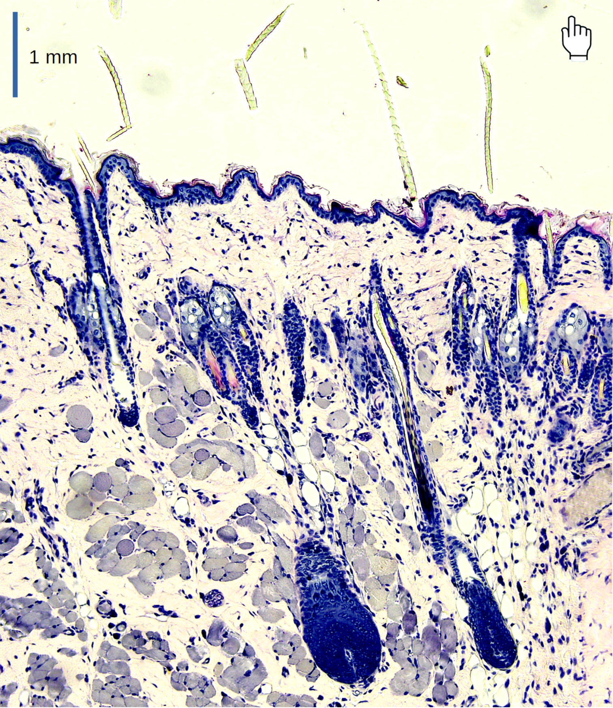
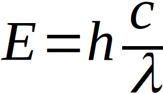
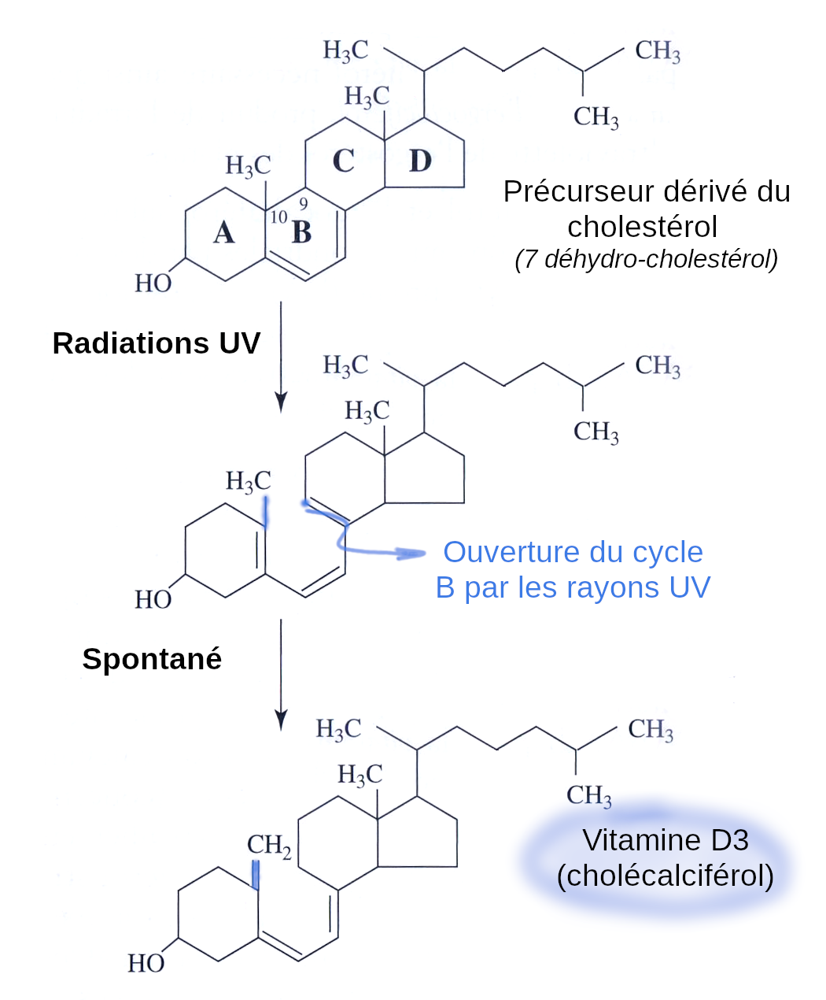
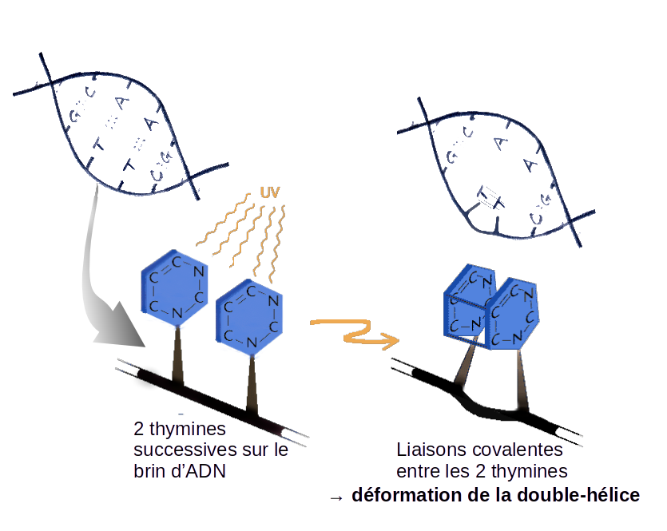
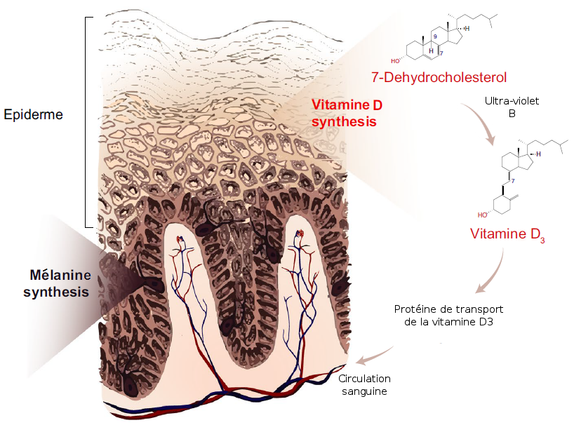
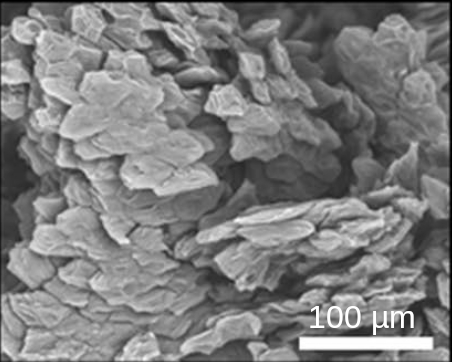
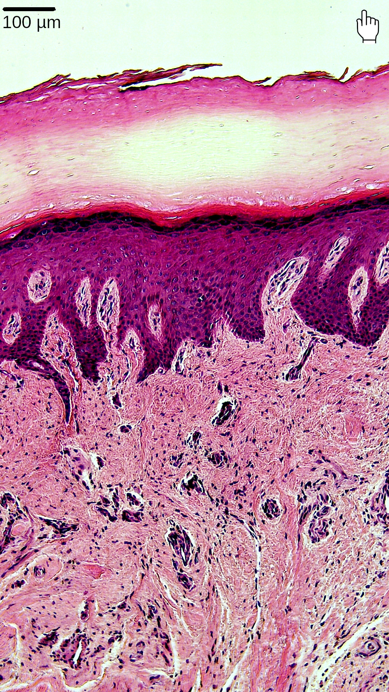
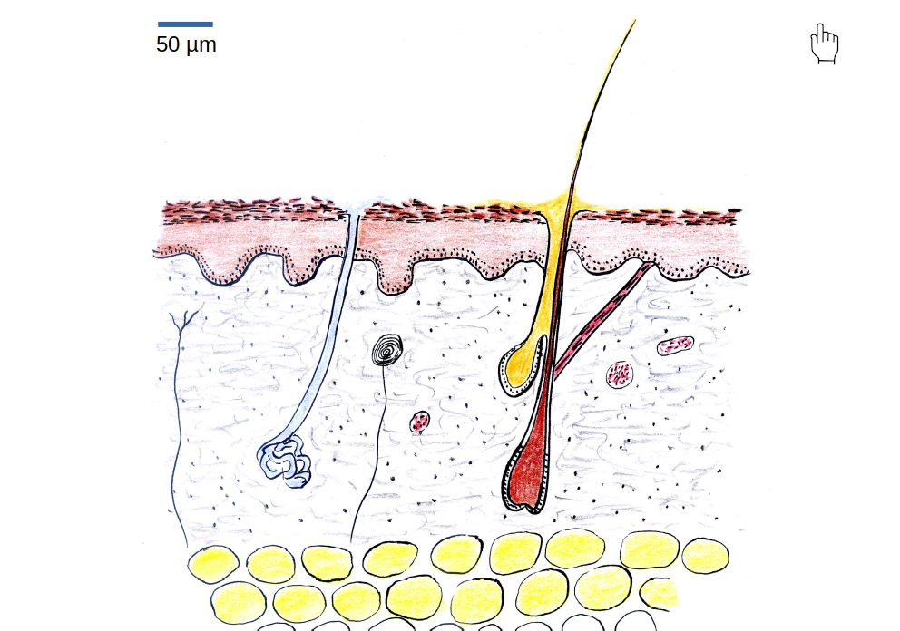
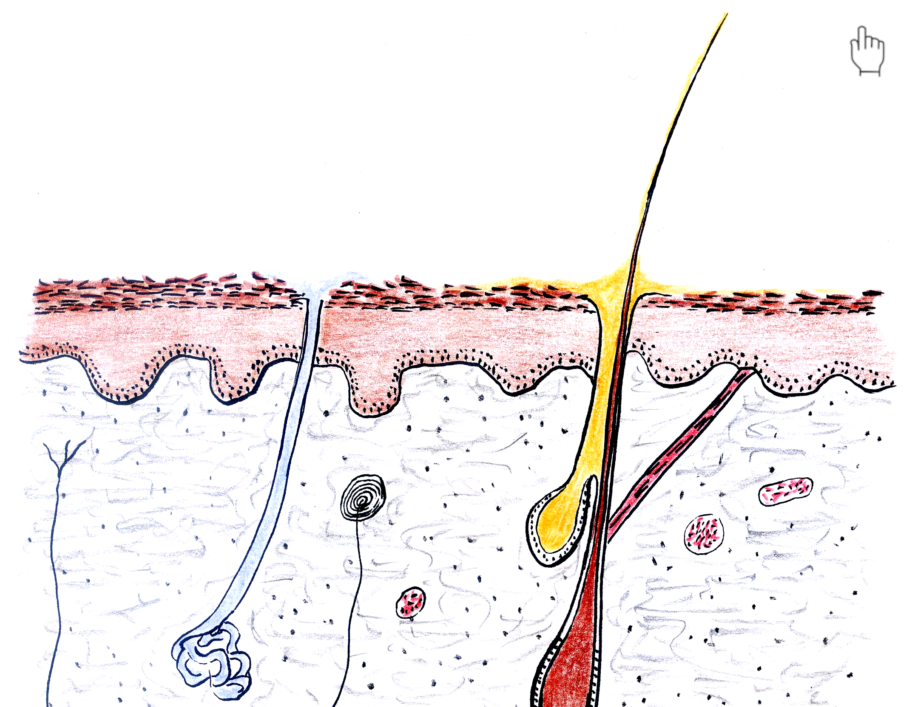

La peau (ou tégument, de tegere en latin, qui signifie « couvrir ») n’est pas un organe aussi bien considéré que d’autres comme le cœur ou le cerveau. Pourtant, la peau a des propriétés qui permettent une protection multiple de l’organisme. .
D’une masse faible (7 % du corps humain), la peau recouvre tout le corps, soit quasiment 2m2, pour une épaisseur de l’ordre du mm. Il s’agit d’un organe souple et résistant aux agressions du milieu.
Quelles sont ses caractéristiques ? Comment nous protège-t-elle ?
Comme un vêtement technique, une structure en 3 couches !
Une observation au microscope d’une coupe de peau humaine montre clairement la présence de 3 couches de cellules, organisées en 3 tissus distincts :
- L’épiderme en surface : constitué de cellules accolées les unes aux autres, elles forment un épithélium.
- Le derme sous-jacent : couche épaisse (plusieurs mm) de cellules disjointes, emballées dans une matrice de molécules fibreuses résistantes à l’étirement (collagène, élastine). On y trouve aussi des capillaires sanguins, qui assurent l’apport en nutriments, et l’évacuation des déchets issus du métabolisme des cellules.
- L’hypoderme en profondeur : couche d’épaisseur très variable selon les endroits, elle est formée d’adipocytes, des cellules spécialisées dans le stockage de lipides (des triglycérides).
1-2-3…Comme une veste technique ! L’épiderme est imperméable mais laisse passer l’eau de transpiration. C’est la couche « goretex ». Le derme est résistant mécaniquement, il assure sa souplesse à l’organe. C’est la couche de structure. L’hypoderme assure l’isolation thermique en évitant les déperditions de chaleur. C’est la couche polaire.

Coupe transversale de peau humaine
Coloration : hémalun éosine
Microscope optique (objectif x10)
Un organe soumis aux rayons du soleil…pour le meilleur et pour le pire !
La peau est directement exposée aux rayons du soleil. Bien que l’atmosphère joue un rôle de filtre aux rayons ultra-violet solaires (grâce à la couche d’ozone (O3) de la stratosphère), certains UV (dont les UV-B), arrivent jusqu’au sol.
Or les rayons ultra-violets sont très énergétiques !
Cette énergie portée par la lumière (notée E, en joules) est inversement proportionnelle à la longueur d’onde :

. Avec h la constante de Planck, c la vitesse de la lumière, et λ la longueur d’onde en nanomètres. Les rayons constituant le visible sont compris entre 400 (couleur bleue) et 800 nm (couleur rouge). Les ultraviolets sont de courte longueur d’onde (300 nm), ils sont donc très énergétiques (λ étant petit, E l’énergie est grande).Pour le meilleur : une énergie utile à la synthèse de vitamine D
Dès le milieu du 17ème siècle, on observe dans les régions industrielles de Grande-Bretagne, des cas d’enfants rachitiques : squelette déformé, membres anormalement courts. Ce fléau dure pendant 250 ans, dans les zones industrielles de l’Europe et de l’Amérique du nord. Au 19ème siècle, on remarque que des « bains de soleil » sont efficaces pour éviter le rachitisme. Dans les années 1930, le gouvernement des États-Unis promeut même l’exposition des enfants au soleil modéré, pour éviter le rachitisme. Par ailleurs, certains aliments limitent également cette maladie, comme l’huile de foie de morue ou même des végétaux préalablement éclairés intensément.
Comment ça marche ? Les UV convertissent un dérivé de cholestérol en vitamine ! (Cliquez pour plus de détail)
Quand la peau est exposée au soleil, les radiations UV (les UV-B en particulier) peuvent pénétrer dans l’épiderme et le derme. Ils sont absorbés par un composé stocké dans les cellules de la peau, dérivé du cholestérol (le 7-déhydrocholestérol). Cela ouvre un des quatre cycles de cette molécule.

Et pour le pire : une énergie mutagène
Par ailleurs, ces UV très énergétiques sont responsables de mutations sur l’ADN. Des mutations qui peuvent être à l’origine de cancers, quand cela affecte certains gènes, comme ceux impliqués dans la régulation du cycle cellulaire.
Effet moléculaire des UV sur l’ADN : (Cliquez pour plus de détail)
Les UV créent des « dimères de thymines » : ce sont des liaisons covalentes entre deux bases thymines successives sur l’ADN. Cela crée des déformations de la double hélice d’ADN, à l’origine d’erreurs de copie (réplication) ou d’expression des gènes (transcription).

Un pigment (partiellement) protecteur des rayons solaires : la mélanine
La différence de couleur de peau dans l’espèce humaine est due à un pigment brun, présent dans l’épiderme : la Mélanine. En fait, on devrait plutôt parler DES mélanines, puisqu’il en existe plusieurs (eumélanine, phéomélanine). Contenus dans les mélanocytes, ces pigments absorbent une partie des rayons du soleil, protégeant partiellement les cellules sous-jacentes des rayons UV. Mais…limitant de ce fait la synthèse de vitamine D ! La couleur de la peau est donc un compromis entre protection et synthèse vitaminique.
{kind=link}

Schéma montrant la double activité de biosynthèse de l’épiderme : Vitamine D et Mélanine1
Au sein de l’espèce humaine, les personnes à peau blanche sont majoritairement situées aux latitudes élevées (près des pôles donc…), les personnes à peau noire vers l’équateur (en gros…). La faible teneur en eumélanine (celle qui protège le plus) des populations Européennes permet un meilleur captage de lumière, là où l’ensoleillement est plus faible, compensant le déficit de rayons solaires. Des travaux de génétique permettent de reconstituer des scénarios de migrations des populations humaines, et de déterminer à quel(s) moment(s) les peaux plus claires sont apparues au cours de l’histoire.
Poils, ongles, cheveux : des productions de l’épiderme, à rôles protecteurs !
L’épiderme est un épithélium pluristratifié : composé de plusieurs couches de cellules, qui se divisent en permanence. Cela assure un renouvellement de l’épiderme, qui vient compenser la perte des cellules mortes par abrasion de la couche cornée en surface. On estime que l’épiderme est ainsi entièrement renouvelé tous les mois environ.

Image au microscope électronique à balayage de la surface de la peau du dessous du pied2
Noter la forte desquamation des kératinocytes (cellules de la couche cornée)
Les cellules de la couche cornée sont très riches en une protéine résistante : la kératine. L’accumulation de cette kératine en certains endroits du corps très sollicités (frottements dans une chaussure par exemple, ou au niveau des mains) créent des épaississements qui assurent une protection mécanique de l’épiderme et des tissus sous-jacents.

Coupe transversale de peau de doigt humain
Noter la forte épaisseur de la couche cornée, par rapport à l’épiderme total.
Coloration : hémalun éosine
Microscope optique (objectif x10)
Quand la sollicitation est trop forte, cela peut créer un décollement de l’épiderme par rapport au derme : c’est l’ampoule !
L’épiderme forme les poils et autres phanères (ongles, cheveux…), qui nous protègent mécaniquement. La base des poils (le follicule pileux) est souvent associée à des mécanorécepteurs, qui transmettent le mouvement du poil sous la forme d’un message nerveux au système nerveux central. Ainsi, une peau poilue perçoit mieux un insecte qui se déplace à la surface de la peau, qu’une peau glabre !
Chez les autres mammifères que l’espèce humaine, la fourrure a un rôle de protection thermique : les poils créent en effet une couche limite thermique, au sein de laquelle l’air est emprisonné, formant une barrière isolante.
Une protection thermique grâce à la transpiration
Par son épiderme pluristratifié et riche en glycolipides, la peau est organe imperméable. Elle laisse néanmoins sortir de l’eau au moment de la sudation, par les glandes sudoripares. L’eau ainsi produite se dépose à la surface de la peau et s’évapore. Un passage de l’état liquide à l’état gazeux qui pompe de l’énergie sous forme de chaleur (c’est la chaleur latente d’évaporation). Cela participe à refroidir la surface de l’organisme…de la même manière qu’on se refroidit lorsqu’on est mouillé, à la sortie d’une douche !
L’abondance de capillaires sanguins logés dans le derme participe également à cette thermorégulation : un afflux de sang provoqué par l’ouverture des capillaires (une vasodilatation) permet une plus grande déperdition de la chaleur portée par le sang, à travers la peau (on est rouge quand on a chaud). Inversement, ces capillaires se ferment lorsque l’organisme est soumis à des températures basses, ce qui permet d’éviter un refroidissement des organes vitaux (tête, tronc). C’est de la vasoconstriction.
Enfin, évoquons le rôle d’isolant thermique de l’hypoderme, qui par sa couche de lipides permet d’éviter les pertes de chaleur.

Schéma de l’organisation d’une coupe transversale de peau humaine
Un organe sensible
La peau étant à la surface de notre organisme, il paraît logique qu’elle héberge des capteurs sensoriels. La perception du milieu extérieur est appelée « extéroception ». Différents types de capteurs sensoriels sont répertoriés au sein du derme :
- des mécanorécepteurs : perception des vibrations, de la pression, sens du toucher. Parmi eux, les cellules de Merkel, situées à la base de l’épiderme, très nombreuses au niveau de la paume de la main, et les corpuscules de Pacini au sein du derme, sensibles à la pression.
- des thermorécepteurs : perception de la chaleur et du froid. Une densité particulièrement forte sur la peau du visage.
- des nocicepteurs : terminaisons nerveuses libres, impliquées dans la perception de la douleur et des démangeaisons.
Une protection biologique grâce au microbiote
La peau aussi a son microbiote, comme l’intestin !
Rappelons que le microbiote est un ensemble de microorganismes unicellulaires vivant en association étroite avec l’hôte qui l’héberge.
Sur la peau, de nombreuses bactéries (Staphylococcus epidermidis, Cutibacterium acnes), mais aussi des levures (mycètes) principalement du genre Malassezia, et même des Acariens (Demodex sp.). Ce sont essentiellement des commensaux : ces microbes se nourrissent de nos secrétions (lipides du sébum) et de la kératine produite par les cellules épidermiques.
Une colonisation microbienne qui démarre à la naissance (via la muqueuse vaginale) et jusqu’aux 12 mois de l’enfant. On observe un nouveau pic de colonisation microbienne à la puberté, où le développement de sébum, riche en lipides, crée un environnement favorable à certains microbes comme les levures (Malassezia) et les bactéries (Cutibacterium acnes).
Le développement de ces microorganismes est associé à la production de substances, dont certaines sont antibiotiques (peptide de Staphylococcus epidermidis, acides gras volatils de Cutibacterium) : elles auraient un rôle de protection vis-à-vis des microorganismes pathogènes : une protection biologique ! Certaines de ces substances sont également à l’origine de l’odeur corporelle, plus marquée après avoir transpiré : les microorganismes profitent de cette humidité pour se développer.
L’association que nous entretenons avec le microbiote de la peau est donc à bénéfice réciproque, c’est du mutualisme.

Cliquer pour faire apparaître le microbiote
Pour en savoir plus sur…
- Le lien entre mélanine, vitamine D et migrations humaines : Skin colour and vitamin D: An update, Hanel Carlberg, Experimental dermatology, 2020
- L’évolution de la couleur de la peau au cours de l’histoire de l’espèce humaine : Jablonski NG. The evolution of human skin pigmentation involved the interactions of genetic, environmental, and cultural variables. Pigment Cell Melanoma Res. 2021 Jul;34(4):707-729. doi: 10.1111/pcmr.12976. Epub 2021 May 4. PMID: 33825328; PMCID: PMC8359960.
- Le microbiote de la peau : Grice EA, Segre JA. The skin microbiome. Nat Rev Microbiol. 2011 Apr;9(4):244-53. doi: 10.1038/nrmicro2537. Erratum in: Nat Rev Microbiol. 2011 Aug;9(8):626. PMID: 21407241; PMCID: PMC3535073.
- Les levures colonisant la surface de l’épiderme : Theelen B, Cafarchia C, Gaitanis G, Bassukas ID, Boekhout T, Dawson TL Jr. Malassezia ecology, pathophysiology, and treatment. Med Mycol. 2018 Apr 1;56(suppl_1):S10-S25. doi: 10.1093/mmy/myx134. Erratum in: Med Mycol. 2019 Apr 1;57(3):e2. PMID: 29538738.
- Le rôle du microbiote dans l’acne : Ramasamy S, Barnard E, Dawson TL Jr, Li H. The role of the skin microbiota in acne pathophysiology. Br J Dermatol. 2019 Oct;181(4):691-699. doi: 10.1111/bjd.18230. Epub 2019 Jul 24. PMID: 31342510.
- modifié d’après Hanel A, Carlberg C. Skin colour and vitamin D: An update. Exp Dermatol. 2020 Sep;29(9):864-875. doi: 10.1111/exd.14142. Epub 2020 Jul 17. PMID: 32621306. ↩︎
- d’après Vela-Romera A, Carriel V, Martín-Piedra MA, Aneiros-Fernández J, Campos F, Chato-Astrain J, Prados-Olleta N, Campos A, Alaminos M, Garzón I. Characterization of the human ridged and non-ridged skin: a comprehensive histological, histochemical and immunohistochemical analysis. Histochem Cell Biol. 2019 Jan;151(1):57-73. doi: 10.1007/s00418-018-1701-x. Epub 2018 Aug 11. PMID: 30099600; PMCID: PMC6328512. ↩︎